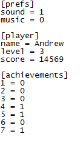

ini_write_real(section, key, value);
| Argument | Description |
|---|---|
| section | The section of the .ini to write to. |
| key | The key within the relevant section of the .ini to write to. |
| value | The real value to write to the relevant destination. |
Returns: N/A
You can use this function to write a value (numeric) to an ini data file. Ini files are split into sections and then each section is subsequently split into key - value
pairs. So a typical ini file would look something like this :

score = 1000;
ini_open( 'savedata.ini' );
ini_write_real( 'save1', 'Score', score );
score2 = ini_read_real( 'save1', 'Score', 0 );
ini_close();
This will set score to 1000, then open 'savedata.ini' and write this value to 'save1' > 'Score'. Then, it will set score2 to the real value under 'save1' > 'score' in it, 1000, and close the .ini again. Had it not found this value, score2 would have ended up set as 0.